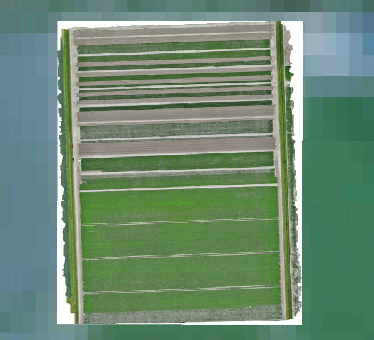
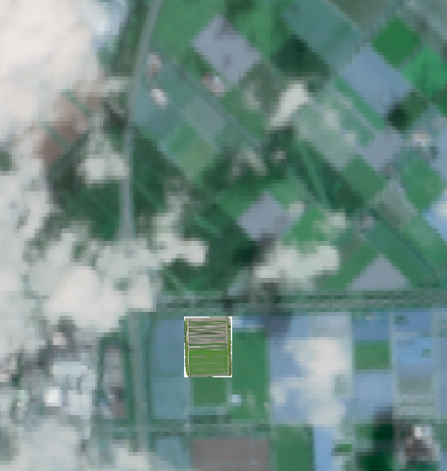
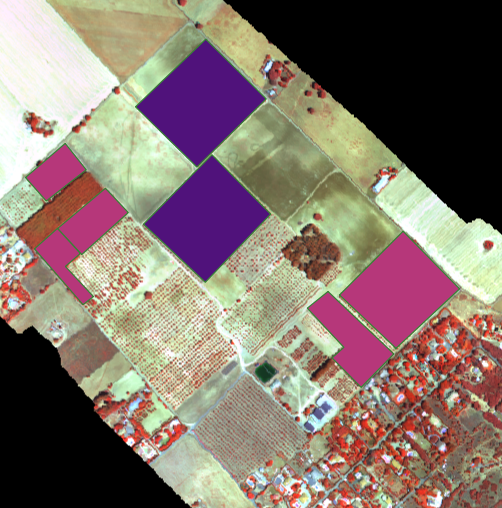
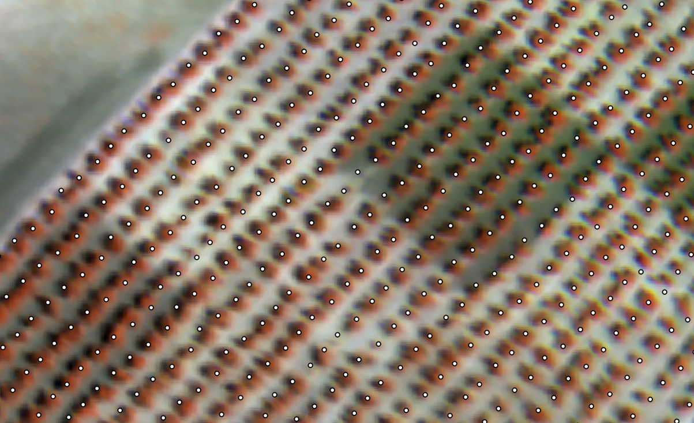
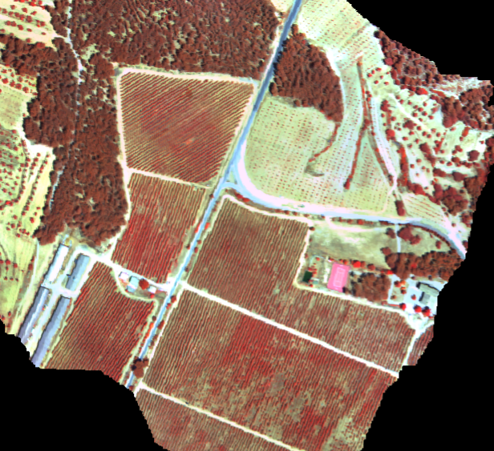

HYDRA-EO 2026: From field measurements to airborne and satellite observations
A multi-country campaign connecting plant measurements, hyperspectral and thermal imaging, and satellite Earth Observation
Campaign update · 27 August 2026
During the 2026 growing season, HYDRA-EO is carrying out an extensive series of field, UAV, airborne, and satellite campaigns across Europe to advance the early detection and monitoring of crop diseases and stress.
The campaigns bring together researchers and partners across the Netherlands, Spain, and Italy. Hyperspectral, thermal, fluorescence, and RGB observations are combined with detailed measurements of plant physiology, biochemistry, crop development, and disease progression.
The objective is to understand how stress and disease modify plant traits and functioning, and how those changes can be detected consistently from individual leaves and plants to UAV, aircraft, and satellite observations.
Plant measurements→Field spectroscopy→UAV→Airborne hyperspectral & thermal→Satellite EO
Monitoring potato health in the Netherlands
In Lelystad, the Wageningen University, Department of Environmental Sciences (WU-DES) team conducted five HYDRA-EO UAV campaigns between May and July 2026 over experimental potato fields. Flights on 11 May, 16 June, 25 June, 1 July, and 21 July followed crop development from early growth through flowering and early tuber development.
WU-DES coordinated the multi-sensor observations, combining VNIR hyperspectral imagery, thermal observations, fluorescence and SIF measurements, and RGB imagery with field disease assessments and plant measurements. Together, they provide a detailed time series for investigating how disease and physiological stress evolve during the season.
The final UAV campaign also covered the cloud-free portion of an EnMAP hyperspectral satellite acquisition from 19 July, creating an important opportunity to compare ground, UAV, and satellite observations.

June hyperspectral campaign. False-colour UAV mosaic showing the spatial structure of the experimental potato plots.

21 July UAV acquisition. High-resolution view of the potato experiment during the final UAV campaign.

Connecting UAV and satellite scales. The UAV acquisition footprint is shown within the partly cloud-free EnMAP scene acquired on 19 July 2026.
Airborne monitoring of olive and pistachio in Spain
At El Chaparrillo in Ciudad Real, HYDRA-EO is conducting repeated airborne and field campaigns over olive and pistachio orchards. A first major campaign was completed in June 2026, combining aircraft observations, extensive field measurements, and an EnMAP hyperspectral satellite acquisition.
A second major campaign is scheduled for 31 August-5 September 2026. The aircraft will simultaneously acquire VNIR and SWIR hyperspectral imagery and thermal observations, while teams on the ground collect complementary spectral, physiological, biochemical, and disease-related measurements.
The pistachio experiments include trees affected by different fungal diseases. This creates an opportunity to investigate whether combinations of hyperspectral and thermal observations can separate disease-related changes from other sources of plant variability. Repeated measurements are essential: the challenge is not only to identify symptomatic plants, but to determine when physiological changes first become detectable.

El Chaparrillo campaign area. Airborne coverage of the agricultural experiments and surrounding orchards on 12 June 2026.

From orchard to individual crowns. Detailed imagery supports the connection between tree-level reference measurements and airborne signals.
Following disease development in Italian vineyards
HYDRA-EO is also conducting campaigns in Italian vineyards, combining airborne VNIR-SWIR hyperspectral and thermal observations with field spectroscopy and physiological measurements. A coordinated campaign in the Bologna region in early August 2026 captured vineyards under different health conditions.
Further measurements are planned for 1 September 2026, targeting vineyards affected by Flavescence dorée. Repeated observations will help determine how disease affects canopy spectral properties, temperature, and plant functioning, and whether these signals remain detectable when moving from individual plants to larger spatial scales.
Expanding observations through European collaboration
HYDRA-EO works with complementary European projects, research institutes, and regional plant-health services to extend observations beyond its core sites and test methods under real disease-management conditions.
In Italy, collaboration with the CERBERUS project and research partners in Bologna supports repeated monitoring of vineyards affected by Flavescence dorée. The early-August and planned 1 September campaigns provide observations under different seasonal and physiological conditions.
In Valencia, HYDRA-EO collaborates with CERBERUS and the Servicio de Sanidad Vegetal of the Generalitat Valenciana. Airborne observations cover olive orchards and other priority areas identified by plant-health authorities, including sites relevant to the surveillance of insect vectors associated with Xylella fastidiosa. This connects advanced Earth Observation technologies with operational plant-health surveillance.

Valencia collaboration. Airborne observations extend HYDRA-EO testing to additional crops, landscapes, and operational plant-health priorities.
The El Chaparrillo campaigns are conducted by Wageningen University, Department of Environmental Sciences (WU-DES) in collaboration with CIAG-IRIAF and IAS-CSIC. The partnership combines WU-DES expertise in airborne and satellite Earth Observation with crop pathology, field experimentation, and plant physiology. Together, the partners provide the reference information needed to interpret hyperspectral and thermal signals from olive and pistachio systems.
Together, these collaborations expand HYDRA-EO across crops, diseases, environmental conditions, and monitoring frameworks. They also provide independent datasets for testing whether methods developed at individual sites can transfer across locations, sensors, and disease systems.
Connecting observations across scales
The 2026 campaigns are creating one of HYDRA-EO’s core experimental datasets. By connecting plant measurements, field spectroscopy, UAV observations, airborne hyperspectral and thermal imagery, and satellite Earth Observation, the project can investigate the same biological processes at complementary spatial scales.
These observations will support the development and validation of approaches that combine radiative transfer modelling, plant physiological information, and artificial intelligence to detect crop stress and disease while explaining the underlying changes in plant functioning.
The campaign season will conclude with the late-summer acquisitions in Spain and Italy, completing a unique multi-country dataset for the next stages of HYDRA-EO research and development.
Continue exploring
Scientific pipeline RTM-Suite tools Project timeline All project news Consortium